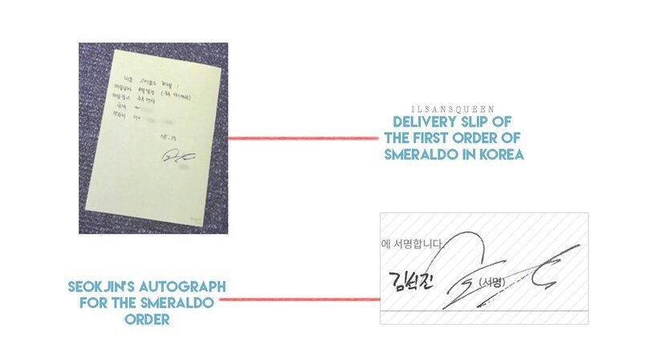

Since, according to the plan, the Smeraldo Flowers store is due to open in mid-September, I was busy planning customs shipments and ways to deliver / store flowers. That is why I have not updated the blog for a long time. Therefore, when I went to check, it was just in time for the event [the florist held a contest among the readers of the blog], I saw that many were interested in Smeraldo. A lot of people participated in the competition. Thank you very much.
In truth, today is my lucky day. I received the first order !! I was at the place where the store was being built around noon and some young man looked inside. It will sound strange, but my heart trembled. It was like meeting a person whom I had known for a long time but forgot. Honestly, I didn’t need to go to the store today, but in the morning I somehow wanted to drop in there, perhaps in order to meet this person there. I was also afraid, I don’t know, it was so strange. What was even more surprising was that the person who came in was looking for the Smeraldo! He said that he did not know that this was a specialty store, he just came, as if something attracted him. This is fate, isn’t it? In the end, we agreed on the delivery. I received my first order in Korea!
In fact, because of the heat these days, delivering a Smeraldo is not easy. Therefore, I told him that I could not deliver it until the end of August, to which he assured that it was a great time, and I accepted the order without any problems. But, looking at the facial expression of the client while he spoke, I understood him. It was a gift for someone important. So I said: “I want to attach a card to the Smeraldo. What inscription on it would you like? ” For some time he hesitated and wrote several options. What he wrote? I will not speak, because it is personal. I asked him again: “But why Smeraldo?”
And he replied: "Because I want to be a good person." This means that he wants to be good for the one to whom the flowers are intended, right? After his departure, I thought a lot about the past. What would happen if I were as sincere as this client? But, as you know, to assume "what if" is completely pointless. As an idiot, I lost it, but I hope that the client will be able to express their feelings and will be happy. My event is also aimed at conveying sincere feelings to people who should receive them. Today at 10 pm work will end, please look forward to the results. I got a lot of stories, so I need time, please understand this. 